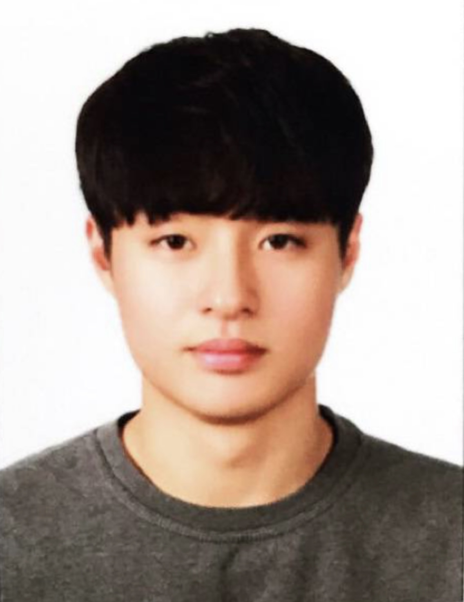

Sep 2022 — Present
Ulsan National Institute of Science and Technology
Integrated M.S./Ph.D. Student
Computer Science and Engineering · South Korea

Systems researcher
Integrated M.S./Ph.D. Student
Computer Science and Engineering
UNIST, South Korea
01 / About
I am an integrated M.S./Ph.D. student in Computer Science and Engineering at Ulsan National Institute of Science and Technology (UNIST), advised by Prof. Youngbin Im. I am a member of the Next-generation Networks and Systems Laboratory (N2SL).
My research interests include datacenter systems, cloud computing, and SmartNICs.
02 / Research
03 / Background
Sep 2022 — Present
Integrated M.S./Ph.D. Student
Computer Science and Engineering · South Korea
Mar 2017 — Feb 2022
B.S.
Computer Science · South Korea
04 / Activities
Jun 2026 — Apr 2027
Scheduled end
Internet Systems Lab (Prof. Sangtae Ha), University of Colorado Boulder
Jul 2026
ACM SIGCOMM 2026
Fall 2024
Principles of Deep Learning
Spring 2023
Computer Networks
Fall 2022
Algorithm